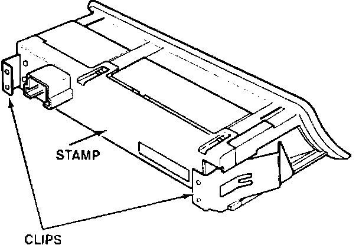
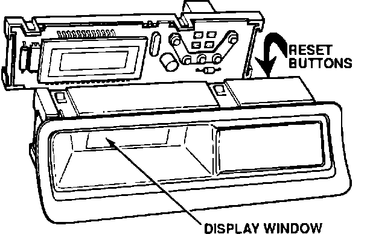

Clock Display - Window Covered with White Haze
90acura02YEAR MODEL VIN APPLICATION
1990 INTEGRA
Up to DB1...LS028091
DA9...LS033829
July 2, 1990
BULLETIN NO.
90-011
Clock Haze or Pitting
SYMPTOM
The display window is covered with a white haze. There also may be haze on the clock lid.
CORRECTIVE ACTION
In most cases the white haze can be removed with a small amount of non-abrasive waterless hand cleaner, Sani-Tuff(R) or equivalent. Or, use a mild, non-abrasive liquid detergent and apply with a soft cloth such as terry cloth or gauze. (Do not use a shop rag.)
If the display window appears pitted after the haze has been removed, replace the clock case as described below.

PROCEDURE
1. Identity the correct clock case by the reset buttons behind the clock lid. The Rhythm Clock has gray buttons and the NS Clock has black buttons. Order the appropriate brand and color. (SEE PARTS INFORMATION.)
2. Schedule a return appointment to replace the clock case.
3. When the customer returns, carefully pry the clock from the dash. Remove the connector.
4. Pop out the tangs and slide the metal clips off the clock case.
5. Lift the four plastic tabs starting with the two on the top of the clock case.

6. Holding the front of the clock case, tilt the back of the case up and remove the circuit board carefully so the reset buttons don't fall out.
7. Put the reset buttons in the replacement clock case and reinstall the clock. Set the time.
PARTS INFORMATION
P/N DESCRIPTION
39701-SK7-306ZA Case, Clock, NS (Black)
39701-SK7-306ZB Case, Clock, NS (Blue)
39701-SK7-306ZC Case, Clock, NS (Brown)
39701-SK7-306ZD Case, Clock, NS (Gray)
39701-SK7-305ZA Case, Clock, Rhythm (Black)
39701-SK7-30SZB Case, Clock, Rhythm (Blue)
39701-SK7-305ZC Case, Clock, Rhythm (Brown)
39701-SK7-305ZD Case, Clock, Rhythm (Gray)
WARRANTY INFORMATION
In warranty: The normal warranty applies.
Out-of-warranty: Any repair performed after warranty expiration may be eligible for goodwill consideration by the District Service Manager. You must request consideration, and get the DSM's decision, before starting work.
Operation number: 733110
Flat rate time: 0.4 hr.
Failed P/N: Part number of the appropriate
brand and color clock case. (SEE PARTS INFORMATION.)
Defect code: 009
Contention code: A01